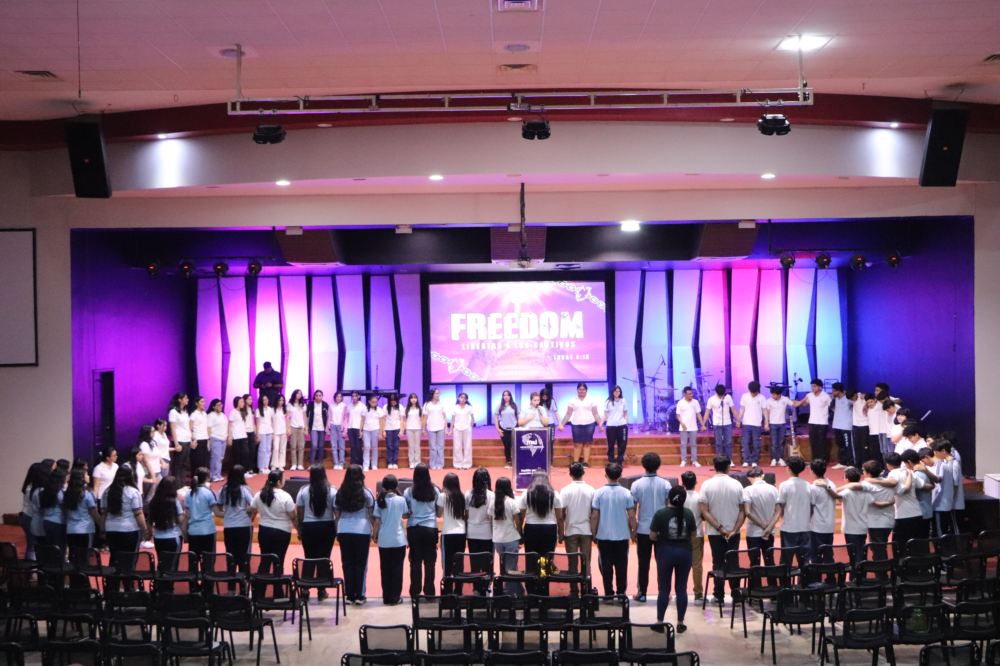
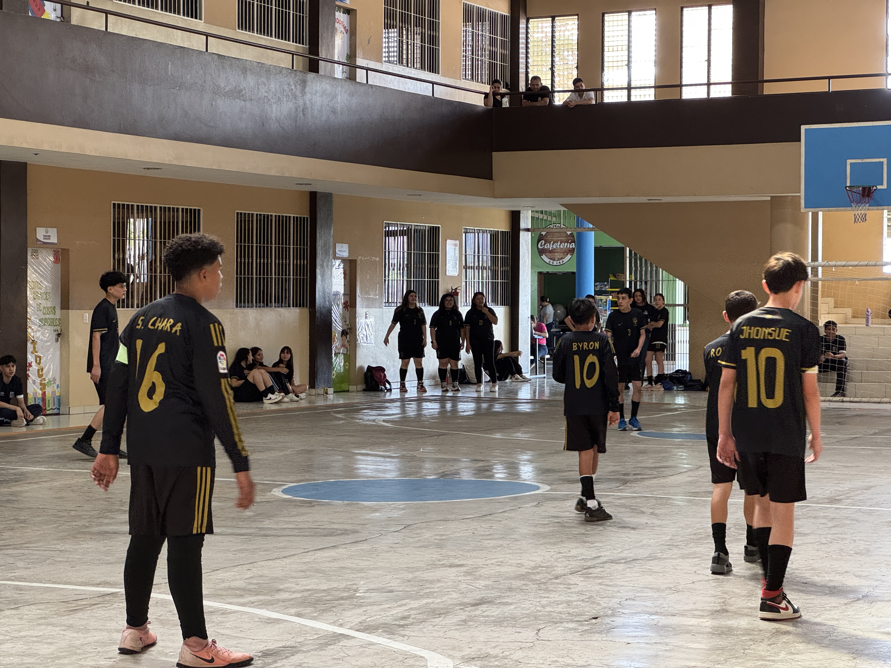

Nuestras Actividades

Devocionales
Espacios diseñados para la formación espiritual y en valores de los estudiantes. A través de la oración, la alabanza y la reflexión práctica de principios bíblicos, se prepara emocional y mentalmente a los alumnos, promoviendo la ética, la disciplina y la convivencia armónica.

Mañanitas Recreativas
Jornadas de juegos lúdicos y dinámicas psicomotrices diseñadas para integrar a las familias y estudiantes de los niveles de Parvularia y Educación Básica, fomentando la convivencia comunitaria y el esparcimiento saludable.

Intramuros
Torneo deportivo oficial de la institución que fomenta la sana competencia, la disciplina, el trabajo en equipo y el liderazgo estudiantil a través de diversas disciplinas deportivas para fortalecer la identidad comunitaria.